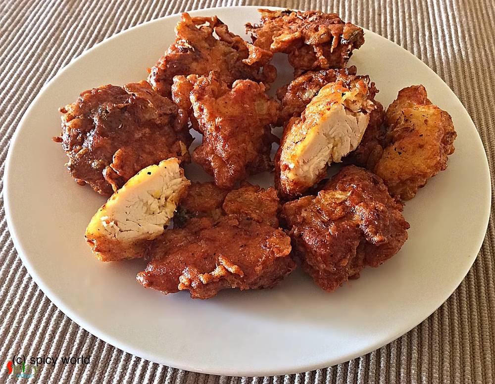

Simple and Easy Recipes

Veg Recipe
Oct 17, 2015
Pasta is one of my favourite snack. Last week I had some boiled pasta, cooked sauce and some mushrooms in my fridge. Then I made this dish. I did not follow any particular recipe. But it came out delicious. Make this at your kitchen and surprise your family.


Nonveg Recipe
Oct 16, 2015
We all love to eat omelet. My grandma used to make this dish with her love and care. That is why it always turned out so tasty. Today I am sharing this recipe with little changes. Please make this at your home.
")
Nonveg Recipe
Oct 15, 2015
In India 'dhaba' means roadside food joints. They offer delicious and spicy meals. Among all of their meals, 'tarka-roti' is the famous one. I once ate 'Mutton Tarka' from them and it was super tasty. Last week I try this tarka recipe and reveal that it tastes exactly like 'dhaba tarka'. Just follow the recipe and impress your family.
")
Nonveg Recipe
Oct 14, 2015
We Bengalis are very fond of fish. Our common meal is fish curry and rice. This recipe is one of the fish curry which we make in occasions and gatherings. I already gave you one kaliya recipe and this one is also very tasty. Try this at your home and let me know how it turns out.
")
Nonveg Recipe
Oct 14, 2015
This is one of my favourite snacks in the evening along with tea. You can get this chop from many fast food centers in West Bengal. But today you can make this Bengali style macher chop in your own kitchen. Just follow the recipe and you will get this mouth watering snack very easily.
Oct 13, 2015
This is a very simple and easy recipe. You can serve this as starter or maincourse. You can also substitute fish with chicken. It tastes delicious. Try this at your home and tell me about your experience.

Nonveg Recipe
Oct 12, 2015
How about a crazy snack in a rainy evening ?? Ohh yeaah its Pakora time!! Many houses have their own pakora story. In Kolkata we get this kind of chicken pakora from fast food centers. If you follow this recipe you can get the same flavour from your homemade pakora.

Veg Recipe
Oct 12, 2015
How about a chilled milkshake in a crazy hot afternoon?? Everybody will say "yessss" .. Lets do this with the sweet flavour of strawberry.
")
Veg Recipe
Oct 10, 2015
Lassi is the most popular drink of Punjab, India. Nowadays we can get lassi almost everywhere. This is a very refreshing drink during summer. Flavoured lassi are also easily available in the market. But I personally prefer plain lassi. Just follow this recipe and you will get the best lassi from your kitchen.
Oct 7, 2015
In India we all love "dhaba" foods and also we love eggs. Mostly their dishes are spicy. So, today I am sharing this spicy dish with you. Please try this at your home.